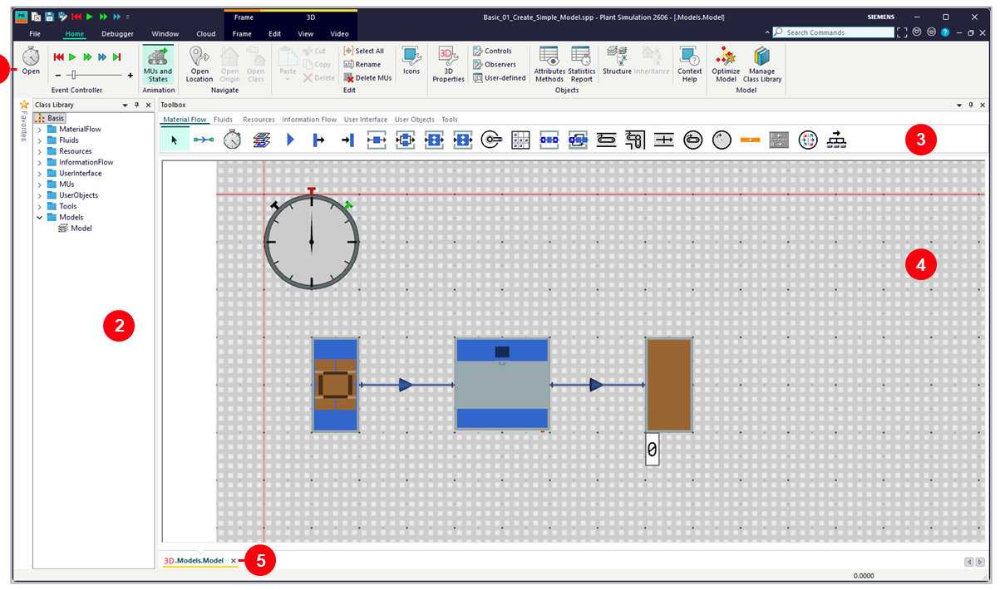
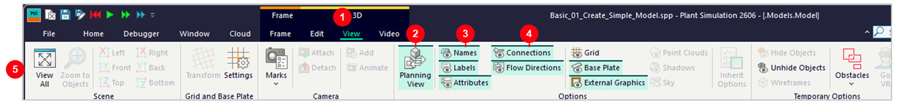
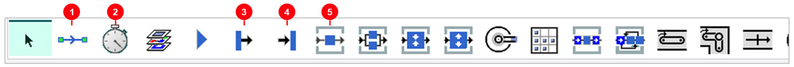
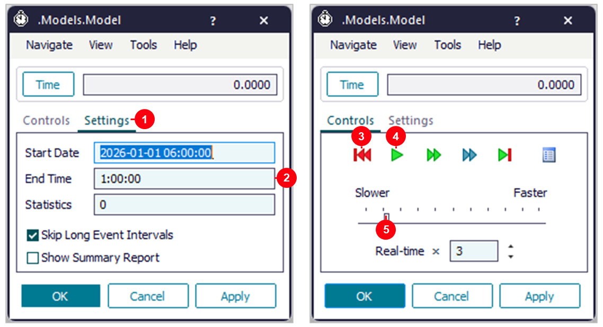
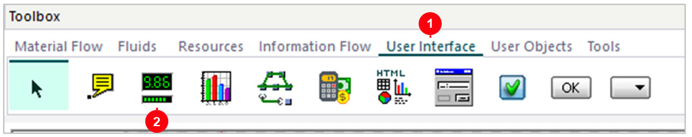
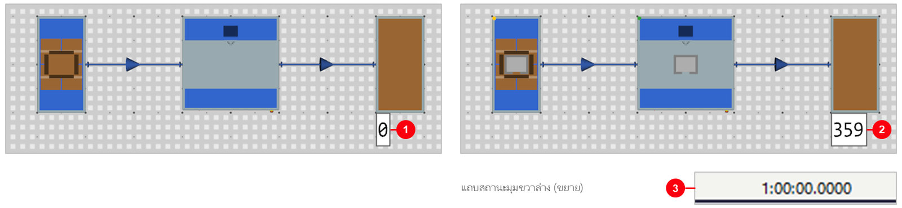
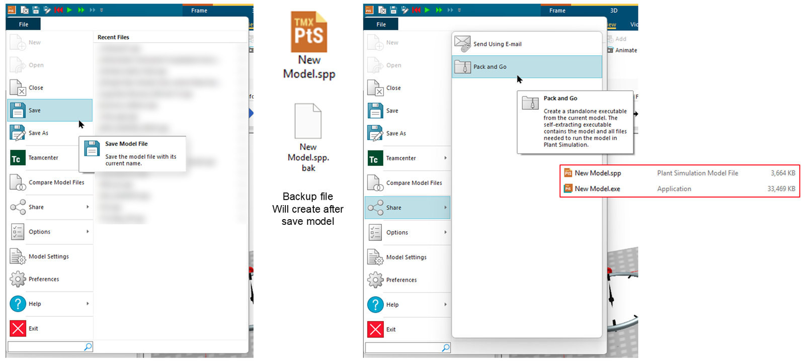

01. สร้างโมเดลแรก
วัตถุประสงค์การเรียนรู้
- รู้จักหน้าจอ Plant Simulation 2606 (Ribbon, Class Library, Toolbox, Frame) และใช้ Planning View ได้
- วาง Source → Station → Drain ต่อ Connector และตั้งค่าเวลาของแต่ละ object ได้
- ใส่ Display แสดงจำนวนชิ้นงาน รันจำลอง 1 ชั่วโมง แล้วอ่านผลได้
- บันทึกโมเดล และส่งต่อโมเดลด้วย Pack and Go ได้
01_Create_Simple_Model.spp — บันทึกจาก Plant Simulation 2606 (เปิดในเวอร์ชันเก่ากว่าไม่ได้)
· เปิดไฟล์แล้วดับเบิลคลิก Frame ใน Class Library › Models
สร้างโมเดลแรกของตัวเอง Source → Station → Drain ทีละขั้น 6 ขั้นตอน ตั้งแต่เปิดไฟล์
รู้จักหน้าจอ วาง object และต่อเส้น ตั้งค่า ใส่ตัวเลขด้วย Display จนถึงกด Run อ่านผล และบันทึกไฟล์
(บทถัดไป บท 02 ต่อยอดเป็นไลน์ 5 สถานีและหาคอขวด)
ภาพรวม: 6 ขั้น ตั้งแต่เปิดไฟล์ถึงอ่านผล
| ขั้น | หัวข้อ | ทำอะไร |
|---|---|---|
| 1 | เปิดไฟล์ | Start Page › Open Model File |
| 2 | รู้จักหน้าจอ | Class Library, Toolbox, Frame, Planning View |
| 3 | วาง object + ต่อเส้น | Source → Station → Drain ด้วย Connector |
| 4 | ตั้งค่า | Source, Station, EventController |
| 5 | ใส่ตัวเลขด้วย Display | แสดงจำนวนชิ้นงานบน Frame |
| 6 | กด Run อ่านผล | จำลอง 1 ชั่วโมง แล้วลองเปลี่ยนค่า |
01_Create_Simple_Model.spp (Frame อยู่ที่ Class Library › Models › Model)
· ผลจำลอง 1 ชั่วโมง: 359 ชิ้น (เวลาผลิต 10 วินาทีต่อชิ้น ชิ้นงานอยู่ในกระบวนการ 1 ชิ้น)
ทุกโมเดลทำ 5 ขั้นเหมือนกัน
| ลำดับ | งาน | ทำอย่างไร | ดูที่ |
|---|---|---|---|
| 1 | วาง object | เลือกจาก Toolbox แล้วคลิกลงใน Frame | ขั้นที่ 3 |
| 2 | ต่อเส้น | Connector บอกทางเดินของชิ้นงาน | ขั้นที่ 3 |
| 3 | ตั้งค่า | ดับเบิลคลิก object ใส่เวลา | ขั้นที่ 4 |
| 4 | ใส่ตัวเลข | Display แสดงค่าบน Frame | ขั้นที่ 5 |
| 5 | Run + อ่านผล | EventController: Reset แล้ว Start | ขั้นที่ 6 |
บท 01 ในตัวเลข: 1 Frame (.Models.Model) · 6 object ในโมเดล · 2 Connector ·
60 นาทีจำลองต่อการรัน
ขั้นที่ 1: หน้า Start Page เมื่อเปิดโปรแกรม
- 1Open Model File — เปิดไฟล์
01_Create_Simple_Model.spp - 2Recent Models — ไฟล์ที่เปิดล่าสุด
- 3Create New Model — สร้างโมเดลใหม่ว่างๆ เมื่อจะสร้างเอง
- 4Example Models — ตัวอย่างโมเดลจาก Siemens (ดู Factory 51 และ Small Parts Production)
ขั้นที่ 2: ส่วนต่างๆ ของหน้าจอ

- 1Ribbon — ปุ่มคำสั่ง กลุ่ม Event Controller ใช้ Run / Reset
- 2Class Library — คลังทุก object และโมเดล เปิด
Models › Model - 3Toolbox — ไอคอน object พร้อมวาง
- 4Frame — พื้นที่วางโมเดล (ภาพนี้เป็น Planning View)
- 5แท็บ Frame — Frame ที่เปิดอยู่ สลับไปมาได้
Models › Modelขั้นที่ 2: มองโมเดลแบบแปลนด้วย Planning View
Ribbon › 3D › View

- 1View — แท็บใต้หัวข้อ 3D (สีน้ำเงินเข้ม)
- 2Planning View — มองจากด้านบน เหมือนแปลนโรงงาน
- 3Names — แสดงชื่อ object
- 4Connections — แสดงเส้นเชื่อมและทิศทาง
- 5View All — ซูมให้เห็นทั้งโมเดล
Edit 3D Properties › แท็บ Captions › คลิกช่อง Name/Label Activated ให้ขึ้นเครื่องหมายถูก ☑ = แสดงชื่อขั้นที่ 3: object ที่ใช้ใน Toolbox (แท็บ Material Flow)

- 1Connector — ต่อเส้นระหว่าง object
- 2EventController — นาฬิกา (1 ตัวต่อ Frame)
- 3Source — ปล่อยชิ้นงาน
- 4Drain — รับชิ้นงานออก
- 5Station — เครื่องจักร ทำทีละ 1 ชิ้น
ขั้นที่ 3: โมเดลแรก Source → Station → Drain
- 1Source — ปล่อยชิ้นงานเข้าระบบ
- 2Connector — เส้นลูกศร บอกทางเดินชิ้นงาน
- 3Station — เครื่องจักร ทำทีละ 1 ชิ้น
- 4Drain — ชิ้นงานออกจากระบบ
- 5EventController — นาฬิกาควบคุมการจำลอง
- 6Display — ป้ายแสดงตัวเลข (ขั้นที่ 5)
ขั้นที่ 4: ตั้งค่า Source
ดับเบิลคลิก Source
- 1Blocking — มีเครื่องหมายถูก ☑ = ถ้าทางข้างหน้าเต็ม Source จะรอ
- 2Time of Creation —
Interval Adjustable= ปล่อยตามช่วงเวลา - 3Interval = 0 — ปล่อยชิ้นใหม่ทันทีที่ Station ว่าง
- 4MU — ชนิดชิ้นงานที่ปล่อย (
*.MUs.Part)
Apply หรือ OKขั้นที่ 4: ตั้งเวลาทำงานของ Station
ดับเบิลคลิก Station
- 1Processing Time = 0:10 — ทำ 1 ชิ้นใช้ 10 วินาที
- 2Const — เวลาเท่ากันทุกชิ้น
- 3Set-up Time — เวลาเปลี่ยนรุ่น (ยังไม่ใช้ = 0)
- 4OK — บันทึกแล้วปิดหน้าต่าง
0:10 = 10 วินาที, 1:00 = 1 นาที, 1:00:00 = 1 ชั่วโมงขั้นที่ 4: ตั้งเวลาจำลอง แล้วกด Run
ดับเบิลคลิก EventController

- 1Settings — แท็บตั้งค่าเวลา
- 2End Time = 1:00:00 — จำลอง 1 ชั่วโมงแล้วหยุดเอง
- 3Reset (ปุ่มแดง) — ล้างผลเก่า กดก่อนรันใหม่ทุกครั้ง
- 4Start (ปุ่มเขียว) — เริ่มจำลอง ปุ่มเดียวกันมีใน Ribbon › Home
- 5Slower – Faster — ปรับความเร็วของภาพเคลื่อนไหว
ขั้นที่ 5: วาง Display เพื่อแสดงตัวเลขบน Frame
Toolbox › User Interface

- 1Toolbox คลิกแท็บ User Interface
- 2คลิกไอคอน Display (รูปตัวเลข 9.86) แล้วคลิกวางใน Frame
- 3ในไฟล์นี้วางไว้ใต้ Drain ก่อนรันแสดงเลข 0
ขั้นที่ 5: บอก Display ว่าจะแสดงค่าอะไร
ดับเบิลคลิก Display › แท็บ Data
- 1Path =
Drain.statNumIn— จำนวนชิ้นที่เข้า Drain (ชิ้นงานที่เสร็จ) - 2Mode = Watch — เฝ้าดูค่า อัปเดตเองระหว่างรัน
- 3Value — ค่าตอนนี้ (ก่อนรัน = 0)
- 4Active — มีเครื่องหมายถูก ☑ = Display ทำงาน
Source.statNumOut จะเห็นจำนวนชิ้นที่ Source ปล่อยออกมาขั้นที่ 5: ปรับหน้าตาตัวเลข
ดับเบิลคลิก Display › แท็บ Display
- 1Type = Text — แสดงเป็นตัวเลข
- 2Color — สีของตัวเลข
- 3Font Size = Small — ขนาดตัวเลข
- 4Decimal Places — จำนวนทศนิยม (ไฟล์นี้ = -1)
Type › Bar แสดงเป็นแท่งแทนตัวเลข (ตามคู่มือ Plant Simulation)ขั้นที่ 6: อ่านผลหลังจำลอง 1 ชั่วโมง

- 1ก่อนรัน — Display = 0
- 2หลังรัน Display = 359 — ชิ้นงานที่เสร็จใน 1 ชั่วโมง
- 31:00:00.0000 — เวลาจำลองที่มุมขวาล่างของหน้าต่าง ครบแล้วหยุดเอง
ขั้นที่ 6: ลองเปลี่ยนค่า แล้วดูตัวเลขใน Display
| ลองเปลี่ยน | แก้ที่ | Display หลังรัน | ทำไม |
|---|---|---|---|
| ค่าเดิมในไฟล์ | – | 359 | 3600 ÷ 10 = 360 ลบ 1 ชิ้นที่ค้าง |
| Processing Time = 0:20 | Station | 179 | ช้าลง 2 เท่า ได้ครึ่งเดียว |
| Processing Time = 0:05 | Station | 719 | เร็วขึ้น 2 เท่า ได้เท่าตัว |
| Interval = 0:12 | Source | 300 | งานเข้าช้ากว่าที่เครื่องทำได้ · Station ทำงาน 83% |
| End Time = 8:00:00 | EventController | 2879 | 8 ชม. × 360 ลบ 1 |
วัดจริงใน Plant Simulation 2606 ด้วยไฟล์นี้ แก้ทีละค่าจากค่าเดิม · กด Reset ก่อน Start ทุกครั้ง
ขั้นที่ 6: บันทึกโมเดล (Save) และ Pack and Go

- ภาพซ้าย:
File › Save(Save Model File) บันทึกโมเดลทับชื่อเดิม ·Save Asบันทึกเป็นชื่อใหม่ - ภาพกลาง: หลังบันทึก จะมีไฟล์สำรอง (Backup file) เกิดขึ้นคู่กัน เช่น
New Model.sppกับNew Model.spp.bak - ภาพขวา:
File › Share › Pack and Goสร้างไฟล์ .exe แบบแตกไฟล์เองได้ (self-extracting executable) ที่รวมโมเดลและทุกไฟล์ที่ต้องใช้เปิดโมเดลใน Plant Simulation เช่นNew Model.spp(3,664 KB) ได้New Model.exe(33,469 KB)
สรุป object ในโมเดลนี้
| Object | ใช้ทำอะไร | ค่าในไฟล์นี้ |
|---|---|---|
| Source | ปล่อยชิ้นงานเข้าระบบ | Interval 0, Blocking, MU = Part |
| Station | เครื่องจักรทำทีละ 1 ชิ้น | Processing Time 0:10 |
| Drain | ชิ้นงานออกจากระบบ | นับจำนวนชิ้นที่เสร็จ |
| Connector × 2 | ทางเดินชิ้นงาน | Source → Station → Drain |
| EventController | นาฬิกาควบคุมการจำลอง | End Time 1:00:00 |
| Display | แสดงตัวเลขบน Frame | Path Drain.statNumIn, Type Text |
ปัญหาที่พบบ่อย และวิธีแก้
| อาการ | วิธีแก้ |
|---|---|
| โมเดลเอียงเป็น 3D มองเส้นไม่ชัด | View › Planning View แล้ว View All |
| ไม่เห็นชื่อ object | View › Names (ถ้ายังไม่ขึ้น: Edit 3D Properties › Captions › Name/Label Activated) |
| Display ยังเป็น 0 หลังรัน | ตรวจ Path = Drain.statNumIn, Active ต้องมีเครื่องหมายถูก ☑ และต่อ Connector ถึง Drain |
| กด Start แล้วผลไม่เริ่มจากศูนย์ | กด Reset (ปุ่มแดง) ก่อน Start ทุกครั้ง |
| รันไปเรื่อยๆ ไม่หยุด | EventController › Settings › ใส่ End Time เช่น 1:00:00 |
| เปิด Names แล้วตัวเลขทับชื่อ Drain | ลาก Display ลงไปข้างล่างอีกเล็กน้อย |